CE2407A
Tutorial 3
Probability distributions
Week 11
Question 3
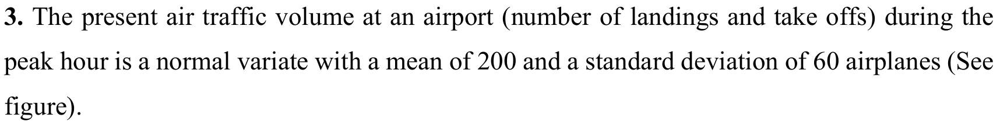
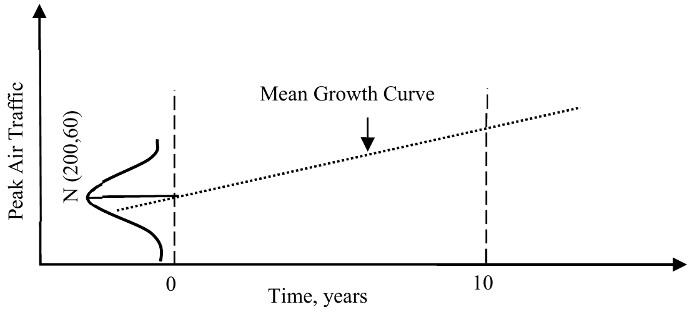
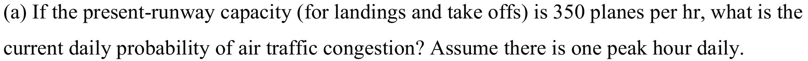
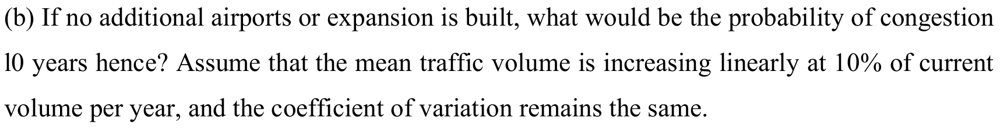
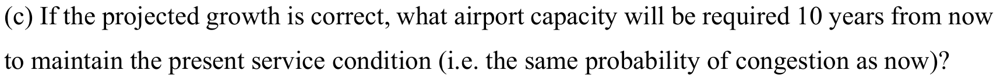
Question 3 · Lecture notes
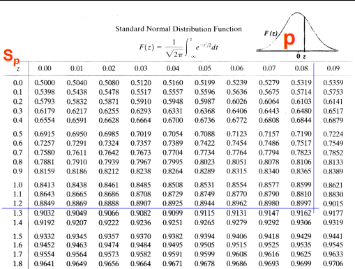
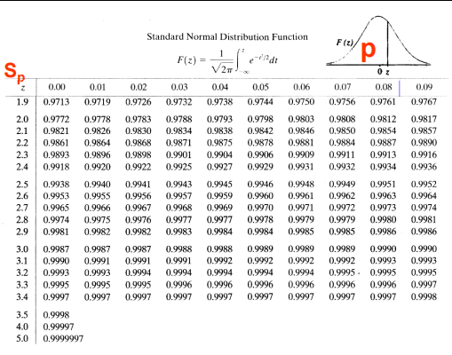
Q3 · Airport capacity
Question 4
![Tutorial Set 2, Question 4. A system of storm sewers is proposed for a city. In order to evaluate the effectiveness of the sewer system in preventing flooding of the streets, the following information has been gathered. The left figure shows the probability mass function for the number of occurrences of rainstorm each year in the city. The right figure shows the distribution of the maximum runoff rate in each storm, which is log-normal with a median of 7 cfs (cubic feet/sec) and COV of 15%. From hydraulic analysis, the proposed sewer system is shown to be adequate for any storm with runoff rate less than 8 cfs. Assume that the maximum runoff rates between storms are statistically independent.](assets/questions/set2-q4-statement.png)
Question 4 (continued)
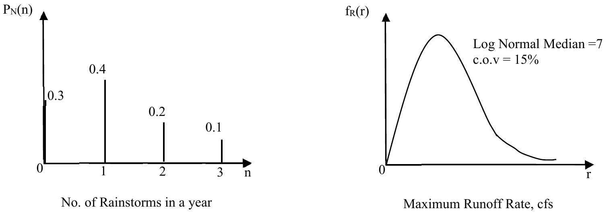
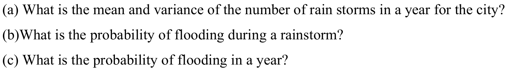
Question 4 · Lecture notes
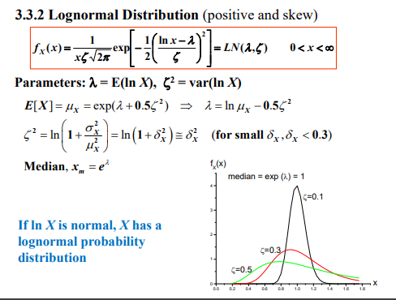
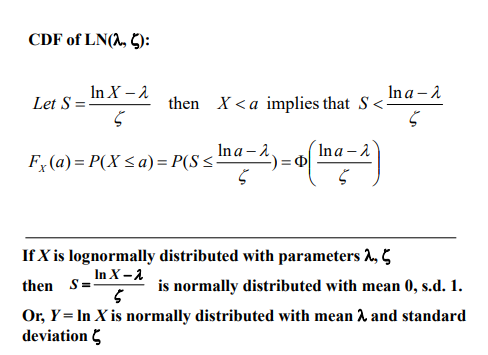
Q4 · Annual flood risk
Question 8
![Tutorial Set 2, Question 8. The cantilever beam shown below is subjected to a random concentrated load P and a random distributed load W. Assume P is normally distributed with mean 5 and standard deviation 1, in kips, and W is normally distributed with mean 1 and standard deviation 0.2, in kips per foot. (a) Determine the mean and variance of the applied bending moment, M = 50W + 10P. Assume that the correlation between W and P is 0.5. (b) The resisting moment of the beam R is Gaussian, with mean 200 and standard deviation 50, in foot-kips. Determine the probability of failure of the beam, P(R < M), assuming that R and M are independent. Diagram: a 10-foot cantilever fixed at the left end, carrying a downward uniformly distributed load W and a downward concentrated load P at the right end, with bending moment M_a at the fixed support.](assets/questions/set2-q8.png)
Question 8 · Lecture notes
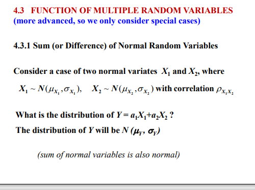
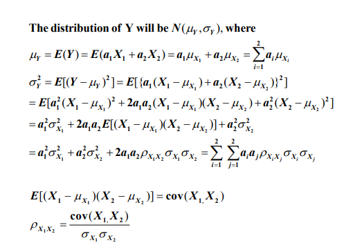